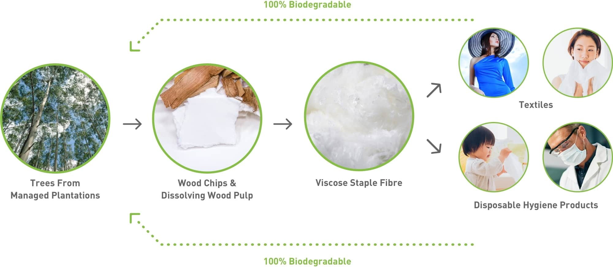

Pentingnya Hidup Sustainable Living untuk Menjaga Kelestarian Alam
Di zaman saat ini industri selalu berlomba lomba untuk meningkatkan produsennya namun tak jarang sebagian dari industri menyebabkan dampak negatif terhadap lingkungan disekitarnya. Ditambah dengan meningkatnya jumlah penduduk manusia yang semakin ikut pula tingkat kebutuhannya. Kebutuhan-kebutuhan tersebut yang tiap waktunya akan terus meningkat selain kebutuhan pokok ialah pakaian dan kertas. Kebutuhan-kebutuhan tersebut bukanlah kebutuhan yang ramah lingkungan karena untuk proses produksinya saja memerlukan energi dan sumber daya alam yang besar, Hal tersebut dapat memicu Ketidak seimbangan alam akibat industri yang hanya mementingkan kebutuhan pasar tanpa memikirkan dampak kerugian yang merusak ekosistem lingkungan disekitar. Belum lagi dampak setelah pemakaian kedua barang tersebut yang bisa menimbulkan limbah di tempat pembuangan akhir atau TPA. Lebih bahayanya apabila masyarakat membakar limbah sampah-sampah itu yang bisa menciptakan udara yang tidak sehat karena faktor bahan kimia yang terdapat di plastik, ataupun pakaian.
Namun beberapa tahun belakangan ini kita sering mendengar tentang sustainable living, sebenarnya apasih sustainable living itu? Sustainable Living adalah gaya hidup manusia yang disertai dengan mengurangi dampak buruk terhadap lingkungan, menjaga serta melindungi kelestariannya. Bentuk dari gaya hidup manusia yang menerapkan gaya sustainable living pun beragam bisa berupa dengan mengurangi penggunaan plastik, memilah sampah yang bisa di recycling, menanam pohon serta menggunakan bahan yang sudah di daur ulang seperti kertas dan pakaian yang terbuat dari bahan alami dan restorasi ohh ya satu lagi yang tidak boleh ketinggalan yakni dengan menghemat penggunaan energi di tempat tinggal kita baik itu energi listrik ataupun air. Menerapkan gaya hidup sustainable living di kehidupan kita sehari-hari akan memberikan manfaat bagi diri kita sendiri dan lingkungan. Berikut beberapa manfaat yang kita peroleh apabila menerapkan sustainable living.
-
1. Membuat Kita Lebih Mindful
Seseorang yang menjalani hidupnya dengan peduli terhadap lingkungan cenderung memiliki gaya hidup yang sederhana. Seseorang akan menjadi lebih sadar terhadap sesuatu yang mereka pakai, konsumsi dan akan membuat mereka menjadi lebih mindfull pada kegiatan sehari-hari dan ikut memberikan dampak pada lingkungan. -
2. Meningkatkan Hubungan Harmonis Dengan Orang Lain
Seseorang yang hidup bersih dan selalu menjaga lingkungan adalah seseorang yang mempunyai rasa percaya diri dan memiliki hubungan sosial yang lebih baik karena saling mau membantu dan mempunyai rasa kerbersamaan yang tinggal di tempat lingkungan asri dan bersih, menurut ilmuwan lingkungan dan behavioural, Dr. Frances (Ming) Kuo, mengatakan bahwa orang-orang yang lebih dermawan dan mudah bergaul dalam lingkungan yang hijau. Ia dan timnya menemukan ikatan sosial yang lebih kuat dan mempunyai rasa kebersamaan yang lebih besar. Berbeda dengan orang-orang yang tinggal ditempat yang kurang hijau akan ada tingkat agresi dan kekerasan yang lebih tinggi. -
3. Mempunyai Tujuan Yang Bermakna
Seseorang yang memiliki tujuan untuk berkontribusi dalam menjaga kelestarian bumi adalah seseorang yang mempunyai tujuan dari lebih dirinya sendiri. Mereka adalah orang-orang yang membuat orang lain sadar bahwa keperduliaan terhadap lingkungan itu sangat penting dikehidupan, memberikan manfaat ke orang lain serta memperpanjang penghijauan yang menghasilkan udara yang sehat. Selain itu orang yang memiliki prinsip sustainable mereka memiliki gaya hidup yang rendah akan kecemasan dan depresi. -
4. Mengurangi Biaya Produksi
Dengan menerapkan sustainable living di kehidupan kita sehari-hari, kita sebenarnya sudah membantu industri, negara dalam memproduksi bahan mentah murni. Karena untuk memproduksi bahan mentah murni itu memerlukan sumber daya alam yang banyak dan menghabiskan energi dalam jumlah besar. Menghemat penggunaan produksi sebenarnya bisa dilakukan dengan cara mengkonsumsi bahan yang dapat di daur ulang dan dampaknya selain meringankan industri dalam produksinya kita juga menciptakan udara yang segar dan menghilangkan udara polusi. -
5. Memberikan Kehidupan Yang Baik Untuk Generasi Mendatang
Kehidupan kita di muka bumi ini tidak selamanya pasti akan ada kematian, begitu pula dengan kehidupan. Di tahun-tahun berikutnya pasti akan lahir anak, cucu serta keturunan kita yang akan menggantikan kita di bumi ini. Untuk itu maka jagalah alam serta lingkungan di sekitar kita dari dampak negatif yang tentunya kita tidak ingin jika nantinya anak, cucu kita menghirup udara yang tidak baik yang dipenuhi polusi serta kerusakan alam yang parah. Maka dari itu kita harus sadar akan keperdulian lingkungan kita.
Itulah manfaat-manfaat yang kita peroleh apabila kita menerapkan sustainable living di kehidupan kita sehari-hari. Lalu bagaimana untuk merealisasikan sustainable living dalam kehidupan kita mulai dari hal yang kecil? yakni dengan cara melakukan sustainable fashion dan paper upcycling. Seperti yang sudah dibahas diatas pakaian dan kertas merupakan limbah yang memakan banyak produksi sumber daya alam, banyak industri yang menggunakan bahan sintetis untuk menciptakan kain pakaian yang mana ini tidak baik dan tidak bisa terurai secara alami di dalam tanah apalagi jika menggunakan bahan kimia yang bisa membahayakan penggunaanya, belum lagi produksi kertas yang memakan banyak pohon apabila tidak dikelola dengan baik serta tidak menerapkan restorasi dan perawatan terhadap kayu yang digunakan untuk produksi pulp karena dampaknya bukan hanya lingkungan alam yang rusak tetapi menciptakan polusi yang bisa memberikan penyakit pada masyarakat sekitar industrinya. Nah maka pada blog ini kita akan membahas tuntas apasih sustainable fashion dan paper upcycling ini, kenapa kedua hal tersebut sangat berpengaruh pada kehidupan sustainable living.
Dampak Sustainable Fashion Terhadap Kehidupan Berkelanjutan
Saat ini masyarakat gemar sekali membeli banyak pakaian, mereka sangat gemar dalam dunia fashion dan style. Namun terkadang tidak banyak yang tahu bahwa pakaian-pakaian yang mereka kenakan itu sebenarnya menggunakan sumber daya alam yang banyak dan energi yang mungkin bisa saja memberikan dampak buruk untuk lingkungan. Belum lagi jika pakaian tersebut dibuat dengan bahan-bahan kimia yang berbahaya yang bisa merusak kulit dan tubuh manusia. untuk itu sebelum melakukan pembelian kain pakaian, kita mesti tahu bahwa produk atau pakaian yang kita beli harus benar-benar terbuat dari serat bahan alami yang bagus misal rayon viscose dan mengadopsi prinsip sustainable fashion. Industri yang menerapkan sustainable fashion adalah industri yang perduli terhadap lingkungan, para pekerja dan masyarakat sekitarnya. Mereka tidak hanya memikirkan tentang profit namun mementingkan kualitas serta bahan yang mereka gunakan adalah bahan yang berkelanjutan dan aman untuk digunakan. Bahan pakaian yang ramah lingkungan adalah bahan yang mudah terurai secara alami dengan tanah karena ini bisa mencegah pakaian yang tidak terpakai atau yang berlebihan menumpuk di tempat pembuangan akhir (TPA). Untuk itu kita harus menerapkan gaya hidup yang berkelanjutan pada fashion dalam keseharian kita. Sustainable fashion adalah konsep yang bertujuan untuk mengurangi dampak buruk lingkungan dari cara industri memproduksi fashionnya. Dalam menerapkan sustainable fashion kita sebagai konsumen harus menyadari dan mengetahui bahwa kain pakaian yang kita gunakan terbuat dari serat alami seperti rayon viscose yang terbuat dari kayu sellulosa dan bahan yang mengandung semisintetis agar aman saat kita gunakan, saat ini ada industri yang memproduksi jenis kain tersebut yakni adalah industri sateri, sateri adalah bagian dari RGE Group yang beroperasi untuk memproduksi kain pakaian yang alami, berkelanjutan, dan hemat energi. Untuk mengetahui lebih lengkap mengenai sateri akan kita bahas nanti dibawah. Dengan menerapkan konsep sustainable fashion kita bisa menurunkan jumlah produksi pakaian yang berlebihan selain itu kita bisa mengurangi polusi yang disebabkan oleh industri, dengan menerapkan gaya berpakaian yang berkelanjutan selain memberikan dampak yang baik bagi lingkungan sekitar dan menghemat energi, kita jadi lebih saving terhadap finansial kita.
Bagaimana Sih Operasional Sustainable Living Di RGE
Selain peran masyarakat dan pemerintah dalam bertanggung jawab untuk menjaga, melindungi dan merawat lingkungan sekitar. Perusahaan atau industri juga harus ikut serta dalam menjaga kelestarian alam, mulai dari sistem proses produksi mereka hingga bahan dan alat yang mereka gunakan.RGE adalah salah satu grup bisnis yang menjalankan dan menerapkan gaya operasional industri yang berkelanjutan. Lalu siapa sih RGE ini dan apa aja operasional yang sudah mereka jalankan, yuk mengenal RGE lebih lanjut.
RGE atau biasa disebut dengan Royal Golden Eagle adalah sebuah grup bisnis industri yang berbasis manufaktur sumber daya alam dan energi. RGE didirikan oleh bapak sukanto tanoto padah tahun 1967 sebagai bisnis yang menyuplai alat konstruksi kontraktor di industri minyak, dan pada tahun 1973 bisnis mereka berkembang dan memproduksi kayu lapis untuk dijadikan pulp sebagai bahan dasar pembuatan kertas. Saat ini RGE sudah memiliki lebih dari 60.000 pekerja dari berbagai belahan dunia dan aset perusahaan senilai US$30 milliar. Sampai saat ini RGE sudah beroperasi di beberapa negara bagian seperti di indonesia, china, brazil, canada dan spanyol. RGE adalah industri yang terkemuka dalam pembuatan sumber daya terbarukan dan industri energi yang efisien. Industri-industri yang dijalankan oleh RGE ada di berbagai sektor, mulai dari APRIL yang menghasilkan produk kertas, SATERI dan APR yang menghasilkan rayon viskose dan Asian Agri yang memproduksi minyak kelapa sawit dan nabati, Pacific Energy yang mengelola pengembangan sumber daya energi independen dan masih banyak lagi lainnya. Semua jenis industri ini di jalankan dengan operasional bebas defortasi dan restorasi artinya setiap operasionalnya sudah benar-benar diperhatikan agar tidak memberikan dampak yang buruk terhadap lingkungan dan masyarakat sekitar serta berkelanjutan. Namun untuk saat ini kita hanya berfokus pada konsep yang berkaitan dengan sustainable fashion dan paper upcycling yang membahas tentang pengolahan kertas berkelanjutan dan ramah lingkungan.
Penerapan Sustainable Fashion Pada Sateri
Sateri adalah salah satu bagian dari RGE Group. Industri ini menghasilkan serat kain yang terbuat dari kayu sellulosa yang kemudian akan dijadikan sebagai rayon viskose untuk pembuatan kain pakaian, kain rumah dan alat pembersih. Dalam prosesnya Sateri selalu mengutamakan kelestarian alam di tempat mereka beroperasi dan setelah kayu sellulosa diolah menjadi potongan kayu yang kecil-kecil dan kemudian akan dilarutkan menjadi bubuk kayu alias pulp, Sateri akan me-restorasi pohon hingga merawatnya kembali inilah mengapa sateri bisa menjadi contoh sebagai industri yang ramah lingkungan dan berkelanjutan. Penerapan operasional yang ber-sustainable ini dapat dibuktikan dari pencapaian-pencapaian sertifikasi yang sateri dapatkan dalam menerapkan industri yang berkelanjutan, yakni STEP oleh OEKO-TEX®, STANDARD 100 oleh OEKO-TEX® dan mereka sudah diberikan label produk MADE IN GREEN oleh OEKO-TEX®. Sebagai salah satu industri yang menghasilkan rayon viskose terbaik dan terbesar di dunia, mewujudkan operasional yang berkelanjutan serta produk fashion sustainable adalah keharusan yang wajib diterapkan, Produk sateri yang paling terkenal adalah EcoCosy.
EcoCosy sudah dipasarkan secara internasional dan udah terbukti sebagai kain yang ramah lingkungan serta memiliki kualitas tinggi karena dibuat dari kayu sellulosa yang dikelola secara lestari dan menciptakan produk yang benar-benar aman digunakan oleh konsumen terurai secara hayati di dalam tanah. Selain produk yang mereka ciptakan benar-benar aman, dan bebas dari bahan kimia yang berbahaya serta perawatan hutan yang berkelanjutan. sateri juga selalu memastikkan kesejahteraan para pekerjaanya dengan memberikan upah yang layak tempat operasionalnya yang nyaman dan sehat serta memberikan dampak yang positif untuk masyarakat sekitar sateri juga memberikan dampak berupa program-program edukasi kepada masyarakat setempat akan pentingnya kesadaran untuk menjaga dan melestarikan alam membantu desa dengan insentif sebagai bentuk turut membantu mengembangkan desa dan fasilitas terkait pelestarian alam.
Dampak Paper Upcycling Terhadap Keberlangsungan Hidup
Kertas merupakan alat yang selalu dibutuhkan oleh setiap umat manusia, mulai dari anak-anak, remaja, hingga orang dewasa. Semua kalangan pastinya memerlukan kertas sebagai penunjang aktivitas sehari-hari entah itu untuk menulis diary, menulis pelajaran sekolah ataupun sebagai catatan rahasia dokumen. Tetapi setiap penggunaan kertas yang berlebih sebenarnya bisa menimbulkan dampak yang tidak bisa disepelekkan, karena dampak yang diberikan pada limbah kertas ini bisa berpengaruh pada kehidupan kita seperti hilangnya keseimbangan karena produksi yang berlebih akibatnya kita akan kekurangan pasokan oksigen dan akan menciptakan lingkungan yang panas selain itu juga dapat menumpukkan tempat di TPA alias tempat pembuangan akhir.
Paper upcycling adalah konsep yang bertujuan untuk menjaga lingkungan dan kelestarian alam dengan mengurangi produksi kayu yang terbuat dari kayu mentah serta pengurangan polusi limbah akibat operasional produksi kertas. Di kehidupan kita sehari-hari kita bisa menerapkan paper upcyling ini dengan menggunakan kedua sisi kertas, memakai kertas yang di daur ulang. Untuk mengetahui apakah kertas yang kita gunakan itu adalah kertas yang ramah lingkungan serta pendauran ulang adalah dengan mengenal merek kertas itu sendiri. Contohnya adalah PaperOne salah satu produk andalan APRIL Group.
APRIL Industri Kertas Yang Berkelanjutan
Selain sateri yang kita bahas diatas, APRIL juga merupakan bagian dari RGE yang artinya industri ini juga menerapkan konsep sustainable atau berkelanjutan. lalu apa ajasih yang dilakuin APRIL dalam menerapkan konsep sustainable livingnya?
APRIL memproduksi kertasnya dengan 100% serat kayu terbarukan dan sudah dijual lebih dari 70 negara yang ada di dunia. produk andalan APRIL adalah PaperOne yang merupakan produk unggulan kertas karena proses pembuatan PaperOne diaplikasikan dengan pabrik yang efisien energi dalam kapasitas produksinya yang mencapai 1,15 juta ton kertas per tahunnya dan APRIL yang juga memproduksi 2,8 juta ton pulp. Dengan prosesnya yang benar-benar berkelanjutan maka APRIL berhasil memperoleh sertifikasi-sertifikasi bergengsi yang membuktikan bahwa industri mereka benar-benar terbaik dalam menerapkan sustainable living. Sertifikasi-sertifikasi itu berupa ISO 9001:2000, ISO 14001, OHSAS 18001 dan Programme for The Endorsement of Forest Certification (PEFC) untuk pengelolaan hutan yang berkelanjutan. penerapan keberlanjutan ini juga disertai dari berbagai aspek dan kerja sama dari berbagai pemangku kepentingan dengan kelompok pemerhati lingkungan dan masyarakat setempat agar penerapan praktik pengelolaan terbaik dalam ranah lingkungan, sosial, dan ekonomi. APRIL juga tergabung dengan anggota Tropical Forest alliance 2020, yaitu bentuk kerjasama pemerintah dengan swasta di tingkat global untuk mendukung dan mengupayakan keberlanjutan Zero Deforestation.
kesimpulan
Sebagai masyarakat kita harus menyadari produk yang kita gunakan adalah produk yang berkelanjutan, alami dan tidak mengandung bahan kimia yang berbahaya. Menggunakan pakaian yang terbuat dari bahan sintetis seperti nylon, polyester adalah bahan yang kurang ramah lingkungan karena produksinya yang mengandung sumber daya alam yang dapat menghabiskan minyak. Jadi gunakanlah pakaian yang terbuat dari serat alami baik itu dari serat rayon viscose Sateri yang berasal dari kayu sellulosa yang ditanam secara lestari dan terbarukan. Intinya yang bisa terurai secara alami dan aman digunakan serta nyaman dan mudah menyerap. Masyarakat juga harus memahami bahwa gunakanlah kertas yang didaur ulang dan menggunakan bahan pulp yang berasal dari kayu yang berkelanjutan. karena penggunaan kertas ini dapat menghemat sumber kayu asal dalam proses produksinya. Masyarakat juga harus memulai hidup yang berkelanjutan mulai dari memilah sampah agar mengetahui mana sampah yang bisa didaur ulang, kesadaran sebagai masyarakat akan lingkungan juga turut menjaga bumi ini dalam jangka waktu yang panjang.